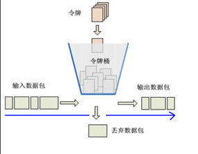
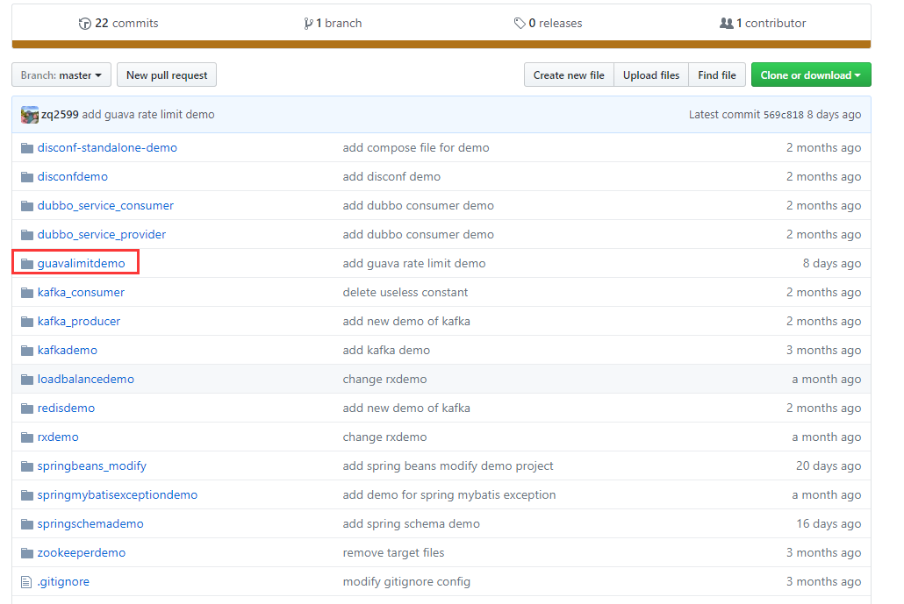
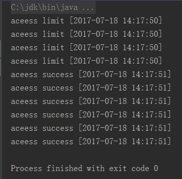

常用的限流算法有漏桶算法和令牌桶算法，guava的RateLimiter使用的是令牌桶算法，也就是以固定的频率向桶中放入令牌，例如一秒钟10枚令牌，实际业务在每次响应请求之前都从桶中获取令牌，只有取到令牌的请求才会被成功响应，获取的方式有两种：阻塞等待令牌或者取不到立即返回失败，下图来自网上：

本次实战，我们用的是guava的RateLimiter，场景是spring mvc在处理请求时候，从桶中申请令牌，申请到了就成功响应，申请不到时直接返回失败；
对于的源码可以在我的git下载，地址是：https://github.com/zq2599/blog_demos ，里面有多个工程，本次实战的工程为guavalimitdemo，如下图红框所示：

创建一个maven工程，在pom中把guava的依赖添加进来：
<dependency>
<groupId>com.google.guava</groupId>
<artifactId>guava</artifactId>
<version>18.0</version>
</dependency>把限流服务封装到一个类中AccessLimitService，提供tryAcquire()方法，用来尝试获取令牌，返回true表示获取到，如下所示：
@Service
public class AccessLimitService {
//每秒只发出5个令牌
RateLimiter rateLimiter = RateLimiter.create(5.0);
/**
* 尝试获取令牌
* @return
*/
public boolean tryAcquire(){
return rateLimiter.tryAcquire();
}
}调用方是个普通的controller，每次收到请求的时候都尝试去获取令牌，获取成功和失败打印不同的信息，如下：
@Controller
public class HelloController {
private static SimpleDateFormat sdf = new SimpleDateFormat("yyyy-MM-dd HH:mm:ss");
@Autowired
private AccessLimitService accessLimitService;
@RequestMapping("/access")
@ResponseBody
public String access(){
//尝试获取令牌
if(accessLimitService.tryAcquire()){
//模拟业务执行500毫秒
try {
Thread.sleep(500);
}catch (InterruptedException e){
e.printStackTrace();
}
return "aceess success [" + sdf.format(new Date()) + "]";
}else{
return "aceess limit [" + sdf.format(new Date()) + "]";
}
}
}以上就是服务端的代码了，打包部署在tomcat上即可，接下来我们写一个类，十个线程并发访问上面写的controller：
public class AccessClient {
ExecutorService fixedThreadPool = Executors.newFixedThreadPool(10);
/**
* get请求
* @param realUrl
* @return
*/
public static String sendGet(URL realUrl) {
String result = "";
BufferedReader in = null;
try {
// 打开和URL之间的连接
URLConnection connection = realUrl.openConnection();
// 设置通用的请求属性
connection.setRequestProperty("accept", "*/*");
connection.setRequestProperty("connection", "Keep-Alive");
connection.setRequestProperty("user-agent",
"Mozilla/4.0 (compatible; MSIE 6.0; Windows NT 5.1;SV1)");
// 建立实际的连接
connection.connect();
// 定义 BufferedReader输入流来读取URL的响应
in = new BufferedReader(new InputStreamReader(
connection.getInputStream()));
String line;
while ((line = in.readLine()) != null) {
result += line;
}
} catch (Exception e) {
System.out.println("发送GET请求出现异常！" + e);
e.printStackTrace();
}
// 使用finally块来关闭输入流
finally {
try {
if (in != null) {
in.close();
}
} catch (Exception e2) {
e2.printStackTrace();
}
}
return result;
}
public void access() throws Exception{
final URL url = new URL("http://localhost:8080/guavalimitdemo/access");
for(int i=0;i<10;i++) {
fixedThreadPool.submit(new Runnable() {
public void run() {
System.out.println(sendGet(url));
}
});
}
fixedThreadPool.shutdown();
fixedThreadPool.awaitTermination(Long.MAX_VALUE, TimeUnit.SECONDS);
}
public static void main(String[] args) throws Exception{
AccessClient accessClient = new AccessClient();
accessClient.access();
}
}
直接执行AccessClient的main方法，可以看到结果如下：

部分请求由于获取的令牌可以成功执行，其余请求没有拿到令牌，我们可以根据实际业务来做区分处理。还有一点要注意，我们通过RateLimiter.create(5.0)配置的是每一秒5枚令牌，但是限流的时候发出的是6枚，改用其他值验证，也是实际的比配置的大1。
以上就是快速实现限流的实战过程，此处仅是单进程服务的限流，而实际的分布式服务中会考虑更多因素，会复杂很多。